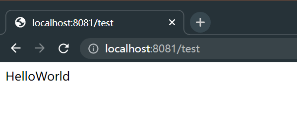

SpringBoot中使用Zookeeper进行服务发现
1. 什么是服务发现
首先引入三个角色，分别是服务提供者、服务消费者、服务中介。一个 HTTP 服务器既可以是服务提供者，也可以是服务消费者。
- 服务提供者：简单来说就是一个 HTTP 服务器，向外提供 API 服务。
- 服务消费者：其实就是一个程序，需要访问服务提供者提供的 API 服务来处理业务逻辑。
- 服务中介：联系服务提供者和服务消费者的桥梁，服务提供者将自己提供的服务地址注册到服务中介，服务消费者可以从服务中介里查找需要的服务提供者地址。

2. 为什么需要服务发现
服务实例的网络位置（IP地址 + 端口）都是动态分配的，由于扩展、失败和升级，服务实例会经常动态改变。如果一个服务的地址经常发生变化，那么使用这个服务的客户端也要修改自己的配置文件以配置新的服务地址。频繁的变更会导致运维非常困难，因此客户端需要一种服务发现机制，以动态地获取到服务实例的网络位置。
3. 常见的服务发现开源组件
服务发现开源组件就相当于服务中介，常见的有：
- etcd：一个用于共享配置和服务发现的高可用、分布式和一致的键值存储。使用了 etcd 的两个著名项目分别为 Kubernetes 和 Cloud Foundry。
- Consul：一个用于发现和配置服务的工具。它提供了一个 API，可用于客户端注册与发现服务。Consul 可对服务进行健康检查，以确定服务的可用性。
- Apache Zookeeper：一个被广泛应用于分布式应用的高性能协调服务。Apache ZooKeeper 最初是 Hadoop 的一个子项目，但现在已经成为一个独立的顶级项目。
- Eureka：Netflix 开发的服务发现框架，本身是一个基于 REST 的服务，主要用于定位运行在 AWS 域中的中间层服务，以达到负载均衡和中间层服务故障转移的目的。
- Nacos：是阿里巴巴开源的一款支持服务注册与发现，配置管理以及微服务管理的组件。
需要知道的是，其实服务注册中心就是一个中介，来储存服务提供者的信息，因此其实 MySQL 或者 Redis 等数据库都能用作服务注册中心，只不过需要自己维护服务发现的功能，而上面提到的这些组件都提供了易用的服务发现 API ，更加适合快速开发。
4. Zookeeper 服务发现原理
Zookeeper 的服务注册与发现，主要应用的是 Zookeeper 的 Znode 数据模型和 Watcher 机制，主要分为以下几个步骤：
- 服务注册：服务提供者启动时，会向 Zookeeper 服务端注册服务信息，即会在 Zookeeper 服务器上创建一个服务节点，并在节点上储存服务的相关数据（如服务提供者的 IP 地址、端口、UUID等）。Zookeeper 注册中心和服务提供者之间会建立一个 Socket 长连接，Zookeeper 注册中心定时向每个服务提供者发送心跳数据包，如果服务提供者没响应，会剔除该服务实例，并且发送通知。
- 服务发现：服务消费者启动时，会根据本身依赖的服务信息，向 Zookeeper 服务端获取注册的服务信息并设置 Watcher。服务消费者获取到注册的服务信息之后将服务提供者信息缓存在本地，调用服务时，根据从 Zookeeper 注册中心获取到的注册信息调用服务。
- 服务通知：当服务提供者因为某种原因宕机或不提供服务之后，Zookeeper 服务注册中心的对应服务节点会被删除，因为服务消费者在获取服务信息的时候在对应节点上设置了 Watcher。因此节点被删除后，会触发对应的 Wathcer 事件，Zookeeper 注册中心会异步向所有监听该节点事件的服务消费者发出节点删除的通知，服务消费者根据收到的通知更新缓存的服务列表。
但是一般来说，不建议使用 Zookeeper 作为服务发现注册中心，因为 Zookeeper 在 CAP 理论中支持的是 CP，即一致性和分区可用性。如果 Zookeeper 服务的 Leader 宕机，则需要重新选举 Leader，这个过程通常需要 30 到 120 秒，选举过程会导致集群不可用，注册服务也有可能会暂时不可用。而对于微服务架构来说，大部分时候强调更多是 AP。Zookeeper 更适合做分布式协调服务。
5. Spring Boot 服务发现实战
前置条件：安装好 Zookeeper，可以使用可视化工具PrettyZoo进行查看。
5.1 服务提供者
服务提供者只是将自己的访问名称以及 IP 地址和端口注册到注册中心，所以并不会选择性的向外提供接口。如果某些接口不希望被外部访问，需要自己进行权限控制。
创建一个 SpringBoot 项目，首先确保应用能够正常启动。
5.1.1 引入依赖包
1 | <dependency> |
5.1.2 配置文件
1 | server: |
5.1.3 增加 REST 服务
1 | package com.ljh.zookeeperdiscovery.controller; |
1 |
|
5.2 观察 Zookeeper 注册信息
可以看到 SpringBoot 已经自动将信息注册到 Zookeeper 中。其中，/services/HelloWorld中的 HelloWorld 就是是应用名称，作为路由地址，在其他服务中就可以像使用域名一样使用这个名字来寻找 IP 地址。在这个 node 节点中，因为我 zk 使用的是 docker 部署的，所以 address 显示的是host.docker.internal，正常来说应该显示的是服务的 IP 地址。

5.3 服务消费者
既然服务提供者已经将服务注册到 Zookeeper 中，下一步就是考虑怎么使用这个服务了。
在 Spring Boot 中能够通过很多种方法进行服务调用，包括 OpenFeign 和 RestTemplate。下面将使用 OpenFeign 调用服务提供者提供的服务。
5.3.1 引入依赖
1 | <dependency> |
5.3.2 配置文件
1 | server: |
5.3.3 引入服务接口
- IHelloApi 是服务提供者中定义的接口，直接复用接口能够避免重新定义
1 | package com.ljh.zookeeperdiscovery2.api; |
- 定义一个用于测试的请求方法：
1 | package com.ljh.zookeeperdiscovery2.controller; |
5.3.4 测试结果
6. spring-cloud-zookeeper 源码分析
关于 spring-cloud-zookeeper 的源码，需要带着以下三个问题进行分析：
- 需要注册什么内容到服务中心？
- 如何将服务注册到服务中心？
- Spring Boot 在什么时候将服务注册到服务中心？
阅读源码需要带着以上问题，一个一个的去看，才不会被细节性的东西所带偏，关注主要的功能代码。
6.1 关于 Apache Curator
Apache Curator 是 Apache Zookeeper 的 Java/JVM 客户端库，包含一个高级 API 框架和实用程序，能够更加简便、可靠地使用 Apache Zookeeper。简单来说就是对 Zookeeper 得原生 API 进一步的简化，封装了一些常用的功能，比如说各种分布式锁、Leader 选举以及缓存等，其中就包括服务注册的功能。
spring-cloud-zookeeper 底层其实也是用的 Apache Curator 进行服务注册，只不过在其基础之上，融入到 Spring Boot 的自动配置体系中。关于 Apache Curator 服务注册的使用方法，请查看官网。
根据 Curator 官网中的介绍，要使用服务注册，需要构建一个服务实例 ServiceInstance。一个ServiceInstance代表着一个服务提供者，封装了服务提供者的信息。
而ServiceInstance由ServiceProvider进行创建，ServiceProvider封装特定的命名服务以及服务的负载均衡策略。
ServiceProvider又需要通过ServiceProviderBuilder进行构建，ServiceProviderBuilder需要通过ServiceDiscovery获取，ServiceDiscovery通过ServiceDiscoveryBuilder构建。调用ServiceDiscovery的start()方法开始启用服务，close()方法注销服务。
总体的链路是：ServiceInstance <- ServiceProvider <- ServiceProviderBuilder <- ServiceDiscovery <- ServiceDiscoveryBuilder
通常，将服务提供者的信息传入到 ServiceDiscovery 的构造函数的时候，它会自动注册/注销服务，但是如果想要自己手动进行注册，可以使用ServiceDiscovery的public void registerService(ServiceInstance<T> service)方法。
6.2 在哪里创建的 ServiceInstance
从现在开始，我们分析源码的主要流程
从上面一小节我们可以知道，spring-cloud-zookeeper 最底层其实使用的还是 Apache Curator框架。那就需要寻找是在哪里创建的 ServiceInstance。
spring-cloud-zookeeper 的关键配置类是 ZookeeperAutoServiceRegistrationAutoConfiguration.java
1 | public class ZookeeperAutoServiceRegistrationAutoConfiguration { |
从上面可以看出，配置类中主要是创建了两个 Bean 实例，一个是 ZookeeperAutoServiceRegistration，一个是ServiceInstanceRegistration。看到ServiceInstanceRegistration跟ServiceInstance命名方式那么像，肯定是有什么关联，点进去看看。
1 | public class ServiceInstanceRegistration implements ZookeeperRegistration{ |
从类的结构关系中可以看到，ServiceInstanceRegistration类中包含着一个ServiceInstance的域。这里的ZookeeperInstance类是服务提供者的一些额外信息，主要是辅助 Spring Boot 的服务发现功能，储存在 payload 信息中。
ZookeeperAutoServiceRegistrationAutoConfiguration类中的serviceInstanceRegistration(ApplicationContext context, ZookeeperDiscoveryProperties properties)方法中注入了应用的上下文信息以及 Zookeeper服务发现的属性配置信息，就是为了构建 ServiceInstance。
RegistrationBuilder类是ServiceInstanceRegistration类的静态内部类。在调用ServiceInstanceRegistration.builder()方法的时候，调用了ServiceInstance<T>.builder()静态方法，创建了一个ServiceInstanceBuilder<T>用于构建服务提供者的所有信息。
当调用RegistrationBuilder类的build()方法时，创建一个ServiceInstanceRegistration类实例并返回：
1 | public static class RegistrationBuilder { |
此时，ServiceInstanceRegistration实例中包含着ServiceInstanceBuilder<ZookeeperInstance> builder构建器的信息，当调用getServiceInstance()方法的时候，就会通过构建器构建ServiceInstance实例并返回：
1 | public class ServiceInstanceRegistration implements ZookeeperRegistration{ |
至此，就能够明白第一个问题，需要注册什么内容到服务中心？并且在哪里进行创建。
6.3 如何将服务注册到服务中心
在 6.1 小节中我们知道，Curator 框架可以通过调用
ServiceDiscovery的start()方法或者是registerService()方法进行服务注册。那我们就需要寻找一下在哪里调用的start()方法或者是registerService()方法。
依然是看到**自动配置类ZookeeperAutoServiceRegistrationAutoConfiguration.java**，其中另外一个注入的 Bean 实例是 ZookeeperAutoServiceRegistration。
1 | public class ZookeeperAutoServiceRegistration extends AbstractAutoServiceRegistration<ZookeeperRegistration>{ |
可以看到，ZookeeperAutoServiceRegistration类中有一个register()方法，非常像是服务注册的逻辑，其中调用了父类的register()方法。
1 | public abstract class AbstractAutoServiceRegistration<R extends Registration> implements AutoServiceRegistration, ApplicationContextAware, ApplicationListener<WebServerInitializedEvent> { |
这里this.serviceRegistry.register()实际调用的是ZookeeperServiceRegistry实例的register()方法：
1 | public class ZookeeperServiceRegistry implements ServiceRegistry<ZookeeperRegistration>, SmartInitializingSingleton, Closeable { |
getServiceDiscovery().registerService()就是实际调用ServiceDiscovery类的registerService()方法进行服务注册。
由此，引出了三个问题：
registration.getServiceInstance()是从哪里来的？- 怎么就调用到了
ZookeeperServiceRegistry实例的register()方法？ServiceDiscovery是在哪里进行构建的？
第一个问题比较简单，在
ZookeeperAutoServiceRegistrationAutoConfiguration配置类中构建ZookeeperAutoServiceRegistration实例Bean的时候，传入了一个ZookeeperRegistration实例Bean，而6.2 小节中创建的ServiceInstanceRegistration实例Bean实现了ZookeeperRegistration接口，而调用getServiceInstance()就能获取到 **ServiceInstance实例**。
第二和第三个问题是一起的，
zookeeperAutoServiceRegistration()方法中注入了一个ZookeeperServiceRegistry实例Bean作为ZookeeperAutoServiceRegistration构造函数的入参。这个ZookeeperServiceRegistry实例Bean是在ZookeeperServiceRegistryAutoConfiguration配置类中创建的。
2
3
4
5
6
7
8
public ZookeeperServiceRegistry zookeeperServiceRegistry() {
return new ZookeeperServiceRegistry(this.context.getBean(ServiceDiscovery.class));
}
}而这里通过 Spring 应用上下文获取的
ServiceDiscovery实例Bean是在CuratorServiceDiscoveryAutoConfiguration配置类中创建的：
2
3
4
5
6
7
8
9
10
11
12
13
14
15
16
17
18
19
20
21
public DefaultServiceDiscoveryCustomizer defaultServiceDiscoveryCustomizer(
CuratorFramework curator, ZookeeperDiscoveryProperties properties,
InstanceSerializer<ZookeeperInstance> serializer) {
return new DefaultServiceDiscoveryCustomizer(curator, properties, serializer);
}
public InstanceSerializer<ZookeeperInstance> deprecatedInstanceSerializer() {
return new JsonInstanceSerializer<>(ZookeeperInstance.class);
}
public ServiceDiscovery<ZookeeperInstance> curatorServiceDiscovery(ServiceDiscoveryCustomizer customizer) {
return customizer.customize(ServiceDiscoveryBuilder.builder(ZookeeperInstance.class));
}
}再继续下去就不分析了，其实就是获取配置文件中 Zookeeper 的信息，创建 CuratorFramework 的连接，以及指定 payload 的序列化器。如果想要设置服务发现节点的 ACL 权限可以自己创建一个实例 Bean 替换默认的 CuratorFramework 连接，或者替换其他实例Bean 进行自定义设置。
6.4 Spring Boot 在什么时候将服务注册到服务中心
我们看到ZookeeperAutoServiceRegistration类的继承关系示意图，可以得知ZookeeperAutoServiceRegistration类实现了ApplicationListener<WebServerInitializedEvent>监听器接口，所以当 WebServer 服务准备完成的时候会产生WebServerInitializedEvent事件，并且 Spring 会自动调用其onApplicationEvent()方法。

1 | public abstract class AbstractAutoServiceRegistration<R extends Registration> implements AutoServiceRegistration, ApplicationContextAware, ApplicationListener<WebServerInitializedEvent> { |
7. 小结
关于 spring-cloud-zookeeper 的源码为什么那么复杂，老母猪戴奶罩一套又一套的，主要还是因为除了支持 zookeeper 能做服务发现以外，还支持 Eureka、Consul 这些作为注册中心，所以需要提供一个比较通用的接口， 这些通用的接口就是定义在 spring-cloud-commons包里。
关于看源码，如果是比较简单的框架直接看没什么问题，但是如果规模比较大的框架，还是要先有个大概的概念再去看，思路会清楚很多，所以还是要多长自己的见识，一味的只看源码其实也没啥用，无头苍蝇，哪里都不着调。